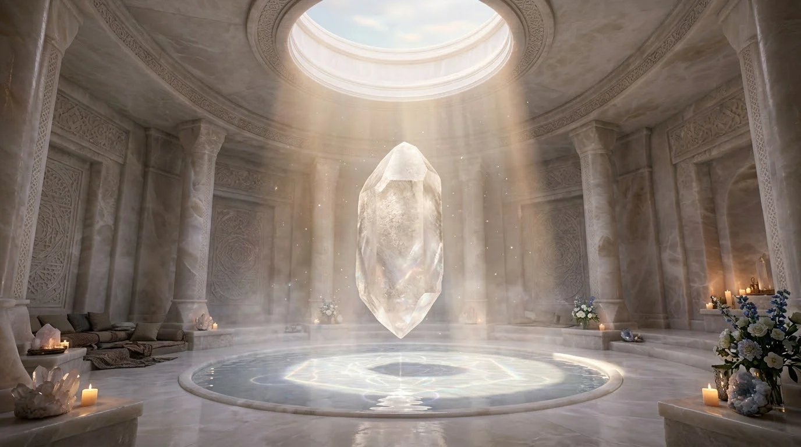
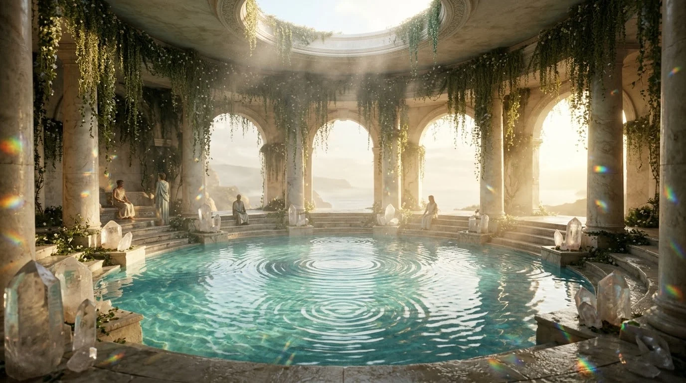
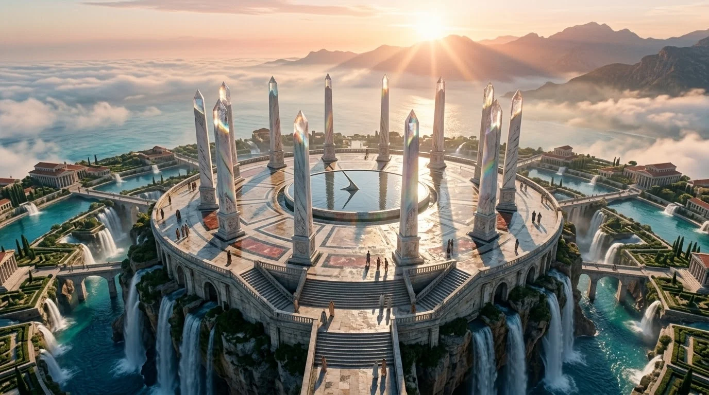
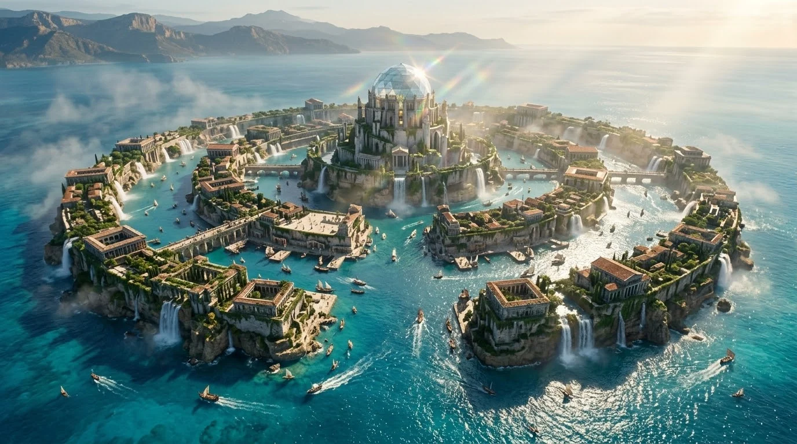
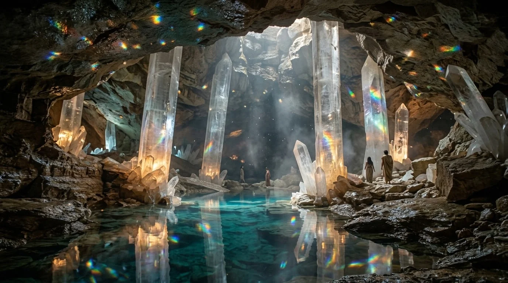
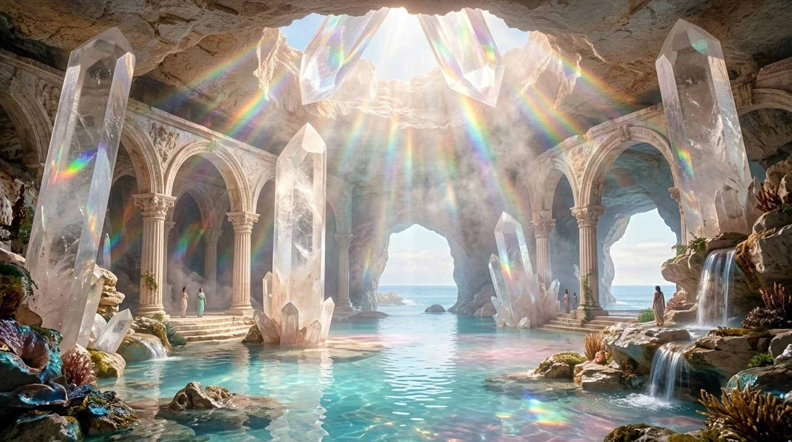
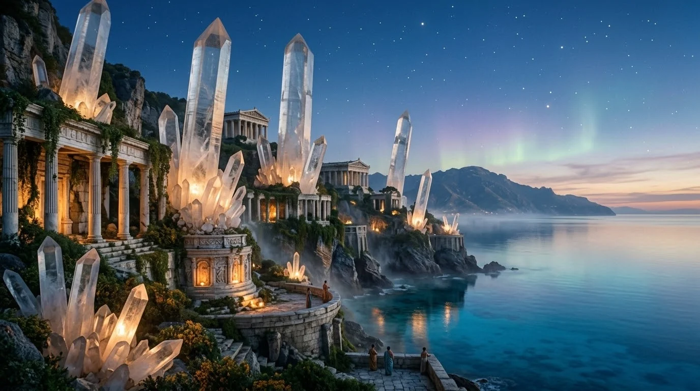

Crystal
水晶 · 清明觉知
通透的晶体、交织的折光与网格意象，承载纯净、秩序与清明的精神象征。

一场融合高频水晶能量、宇宙门户通道与多元声波疗愈的
沉浸式无时空静修夜。
本活动是一场不以盈利为目的的纯公益性质沉浸式能量疗愈体验，是由「潼眼看」组织发起的公益活动，目的是为了唤醒与凝聚散落各处的同频灵魂，搭建一座温暖纯粹的能量链接平台——专为星际种子、光之工作者、水晶小孩及星星的孩子等高敏同频群体打造。定向邀约来自两岸三地、对身心灵文化与宇宙能量有高度认同的嘉宾参与。

THE PLACE WE BELONG有些灵魂，始终以比现实更辽阔的尺度感知生命。他们望向星际，追问意识与归途，也在日常世界里，寻找能够安放这份感知的所在。
潼眼看 1212，由此而生。它将散落各处的同频灵魂汇聚在一起，让敏锐获得回应，让孤独拥有归属，让彼此的理解、支持与协作，凝聚为共同的意志。
在这里，星际种子与光之工作者相认、相惜；共同的语言，来自对生命深处的感知，以及将内在之光带向世界的意愿。

这场相聚也向仍在探索自身来处的灵魂敞开。以水晶、声音、光与静观构成的共同场域，为每个人与内在智慧的相遇，留出宽阔而安静的空间。
不以说教定义觉醒，不以课程替代感知。我们珍视温和、自然、自主的探索，让每个人依照自己的节奏，聆听高我、辨认共鸣，走向属于自己的理解。
从一夜的共振，延展至更长久的相互支持与共同创造；让这份相认，成为星际家族彼此栖息的港湾，也成为通向现实服务与善意行动的起点。
在关于亚特兰蒂斯的文明传说与当代灵性叙事中，一座海洋文明承载着关于智慧、自然、水晶与声波和谐共生的想象。它的兴盛与沉没，也成为一个深刻的隐喻：当外在技术与能量的放大，超越内在的成熟、慈悲与节制，文明如何重新回到平衡？
站在 AI 与信息高速演进的时代，这个命题再次回响。1212，是潼眼看选择的相聚坐标：以水、声波、水晶与光为语言，让目光从无尽的外求回到内在，重新感知创造力与心灵之间的关系。

通透的晶体、交织的折光与网格意象，承载纯净、秩序与清明的精神象征。
以深海的静谧与水的流动，回应潜意识、情绪与生命深处的包容。
声音赋予空间层次，光让感知获得形态；在聆听与静观中，进入属于自己的内在节奏。
在本次主题的灵性隐喻中，“亚特兰蒂斯之心”是一份关于纯净、平衡与内在合一的集体意愿。它如同深海中的一颗种子，指向清明与慈悲，也指向不同生命重新连接的可能。
当代星际文化中的“144,000”，以 12 × 12 × 1000 的数字意象，象征完整、圆满与再次汇聚。我们将这份诗意的身份共鸣，延伸为现实中的彼此守望：让高维觉知，回响为脚踏实地的善意与创造。
水晶、水、声波与光，共同构成这一夜的体验语言。
隐去时间刻度，暂别电子信息的喧嚣，
在静谧、共修与感知之中，展开多维的内在探索。

以灵性引导与冥想链接亚特兰蒂斯主题意象，将觉知带回内在，在共同意图中感受清明、稳定与合一。
铜锣与水晶钵交织出深长、细腻而丰富的声音层次，让聆听、躺卧与静观成为一体，容纳每个灵魂不同的感知路径。
高频水晶原石、水晶能量网格与植物曼陀罗，共同构成空间的主题秩序，让自然材质、晶体折光与声音彼此呼应。
星际种子与光之工作者在共同的冥想、静观与意图中相聚，以集体工作的共振，承载对地球扬升、生命合一与创造服务的精神愿景。
铜锣的深广、水晶钵的清透、晶石与植物的自然秩序，以及冥想中安静而坚定的引导，共同织成完整的体验。每一种语言各有深度，又在同一份意图中彼此交融。
属于星际种子、光之工作者与高敏感知探索者的专属相聚，让同频成为连接，让相遇延展为长期的共创。

本次活动采用定向邀请，对受邀嘉宾免费，发起方不以盈利为目的。
如果你对本次相聚有特别的参与意愿，欢迎将个人介绍与意愿说明发送至 Katherine 的 Gmail 邮箱。来信可介绍你的所在城市、专业领域、对本次主题的共鸣，以及希望带来的交流与共创。
参与意向将作为邀请交流的起点，具体邀约由潼眼看回复沟通。
发送参与意向harjocheejahncke@gmail.com星际、能量与扬升在此承载品牌的灵性愿景与艺术叙事。欢迎参与者保留独立理解，相关体验不作医疗效果承诺。
